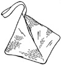
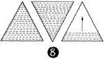
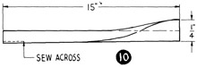

1952—How to Make Hats
by Ruby Carnahan
Stitched Bag to Match Beret
Use 3-cornered bag pattern, page 88.
CUTTING BAG
Place pattern on foundation felt and cut out three identical sections. Baste these three felt sections to wrong side of material and cut out.
STITCHING
(Illus. 8) Machine stitch each section on felt side from outer edge to center. Fill in each section with rows of even stitching the same distance apart as stitching on beret. Steam press each section.
 (Illus. 9) Sew the three sections together, stitching two seams from top to
bottom. Stitch the third side up from bottom for 1/2" and down from top for
1/2". Insert a zipper in this side opening . Stitch three seams together to
form bottom of bag and turn bag inside out. Steam and press all seams open.
(Illus. 9) Sew the three sections together, stitching two seams from top to
bottom. Stitch the third side up from bottom for 1/2" and down from top for
1/2". Insert a zipper in this side opening . Stitch three seams together to
form bottom of bag and turn bag inside out. Steam and press all seams open.
BAG HANDLE
(Illus. 10] Cut a strip of material 4" wide and 15" long for handle. Fold strip together lengthwise on wrong side and stitch. Pull fold through to right side. Fold strip in half and pin ends in opening at top of bag. Turn top of bag in 1/4" and sew securely around handle by hand.
LINING
Cut lining and assemble exactly like outside of bag. Press and slip into bag. Turn edges of lining under around zipper and slip stitch.